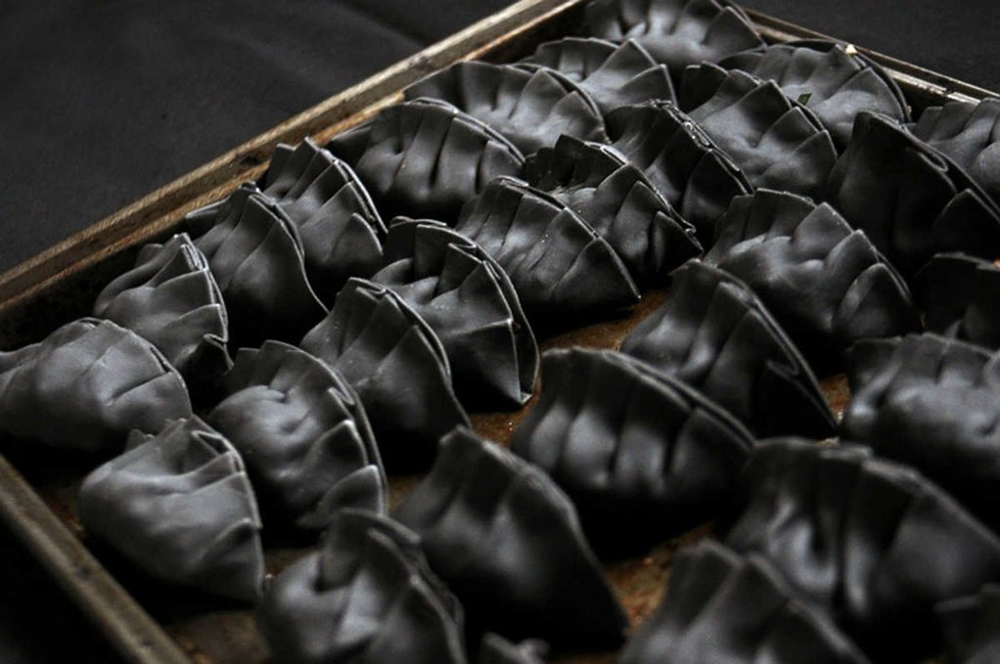
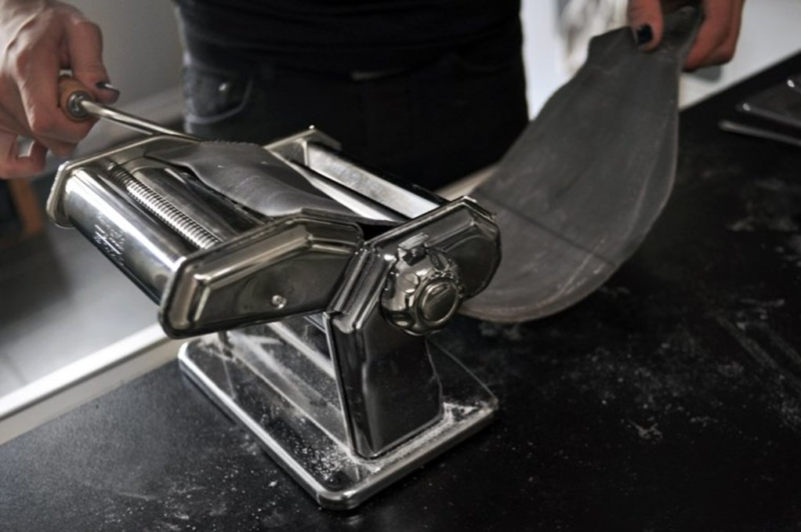
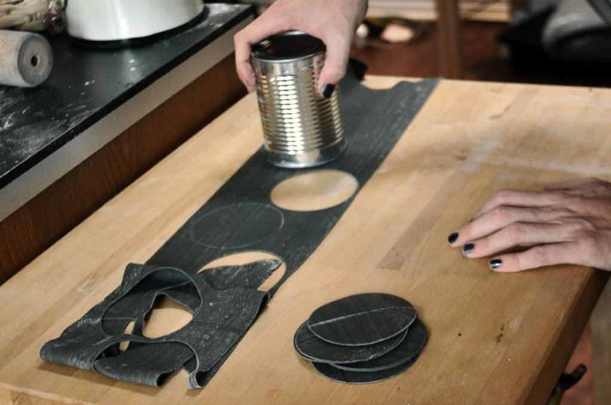

gyoza wrappers
40 wrappers — 60 minutes
We made homemade gyoza skins with some friends a few weeks back, it's fun, but it takes a long time (it is why doing it in a group makes a lot of sense). Devine had the amazing idea of using our pasta maker to make the dough.
We didn't have any round cookie cutters to make large circles, we tried to use the bottom of a drinking glass but the rims aren't sharp and smoosh up the dough down instead. Again, Devine had a stroke of genius: Cans! We used an empty bean can, which happened to be the approximate diameter of a gyoza wrapper.
A pasta maker is not necessary to make gyoza skins, it's possible to do it with a rolling pin but it is important to get the dough thin enough. It is possible to buy pre-made gyoza wrappers, select grocery stores have them.
The gyoza wrapper techniques and ratios were based on a recipe from Just one cookbook.
Bamboo charcoal. That day we used bamboo charcoal powder to color the gyoza wrappers black, but it is completely optional. If you want to do this, add 5 g of bamboo charcoal powder(food grade) to the dry dough.
 all purpose flour240 g
all purpose flour240 g salt5 g
salt5 g water120 ml
water120 ml cornstarch7 g
cornstarch7 g
dough
- Mix 240 g (2 cups) of all purpose flour (add 5 g (1 tsp) of bamboo charcoal powder now if using) in a bowl.
- Dissolve 2.5 g (1/2 tsp) of salt in 120 ml (1/2 cup) of just-boiled water, and pour into the flour little by little while mixing.
- Knead the dough on a clean flat surface for a few minutes until it becomes smooth. If your dough is too dry, add 15 ml (1 tbsp) of hot water and repeat as needed.
- Separate the dough in 3. Roll into balls and wrap them up with a bag or place in a lidded bowl, refrigerate for at least 30 minutes. Leaving it to rest in the refrigerator makes the dough easier to manipulate afterwards.
- Flatten each piece out with a rolling pin into a rough rectangle, thin enough so that you can run it through the pasta maker. Pass it through your pasta maker a few times, incrementing down to the thinnest setting gradually. You can use a rolling pin instead, it works but it takes a lot more effort. Both techniques work, this one just happens to be quicker and easier on your body. Note that depending on your pasta maker, the dough will come out a bit thicker than a traditional gyoza. If you want it thinner you can flatten it a bit more with a rolling pin.

- Put the thin sheet of dough onto a clean flat surface. Take a can (with about a 7.6 cm diameter) and start to poke holes into it, these are your gyoza wrappers! You can use cookie cutters if you have some. We used an old bean can we had.

- Pile the wrappers, sprinkle some cornstarch (or potato starch) in between each piece so they don't stick together. Put a damp towel over your wrappers so they don't dry out. Repeat this process for the other 2 portions of dough, and you can re-use the scraps and make new dough to run through the pasta maker.